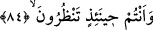
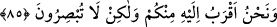

dayanınca da ölüm meleği onu öldürür.”[233]
84. O vakit siz bakar durursunuz.
“O vakit siz,” yâni ey ölmek üzere olan arkadaşının etrafında bulunanlar “bakar
durursunuz;” can çekişmekte iken maruz kaldığı sıkıntıyı görür, ona acırsınız. Aslında
onu, helâk edici bu acılardan kurtarmayı ne kadar istersiniz.
85. (O anda) biz ona sizden daha yakınız, ama göremezsiniz.
“(O anda) biz ona,” ölmek üzere olan o kimseye ilim, kudret ve tasarruf bakımından
“sizden daha yakınız,” Bâzı müfessirler, âyet-i kerîmede ilim yerine bilmenin en güçlü
sebebi olan yakınlığın zikredildiğini söylemişlerdir. Çünkü siz sebeplerinin ve
keyfiyetinin aslına vâkıf olmadığınız halde ölen kişinin sadece çekmekte olduğu
ağrıların yüze yansıyan belirtilerinden görebildikleriniz hâricinde durumunu
bilemezsiniz. Ayrıca o sıkıntılarından en ufak bir şeyi dahi gidermeğe gücünüz yetmez.
Halbuki biz ilmimiz ve kudretimizle veya onun rûhunu alan ölüm melekleri aracılığıyla
onun içinde bulunduğu durumun bütün ayrıntılarına vâkıfız “ama siz göremezsiniz.”
Sizler bizim işlerimizin nasıl gerçekleştiğini bilmediğiniz için, onun başına gelenlerin
esas mahiyetini de idrâk edemezsiniz.
Âyet-i kerîmede geçen lâ tubsırûn fiili basîret kökünden türetilmiştir; görmek
anlamındaki basar kökünden değil. Bu âyet-i kerîmenin gerçeğe en yakın olan tefsiri şu
ifâdedir: “Onu sizden çok daha iyi bildiğimizi siz anlayamazsınız.” Sa’di Müfti’nin
hâşiyelerinde de böyle kaydedilmiştir.
Baklî (r.a.) şöyle demiştir: Allah Teâlâ’nın yakınlık derecesi ilim bakımından, ihata
ve kuşatma bakımından, fiilî, sıfat yönünden, kahr yönünden ve lütuf bakımından
yakınlık olmak üzere çeşit çeşittir. Mesâfe ve mekan bakımından yakınlık, ilâhi zat ve
sıfatı yönünden mümkün değildir. Ancak Allah bir takım kalblere, onları kahr görüşüyle
eritmek için azamet kaynağından tecellî eder. Bir takım kalblere de sâfileşmeyi
öğretmek üzere cemâl kaynağından tecellî buyurur. Mârifet ehline belirtileri açık olduğu
halde bu yakınlığı ancak Arş-ı ilâhî yakınları bilirler.
Bu ilâhî hitabta muhataplarını sakındırma ve tehdîd vardır.